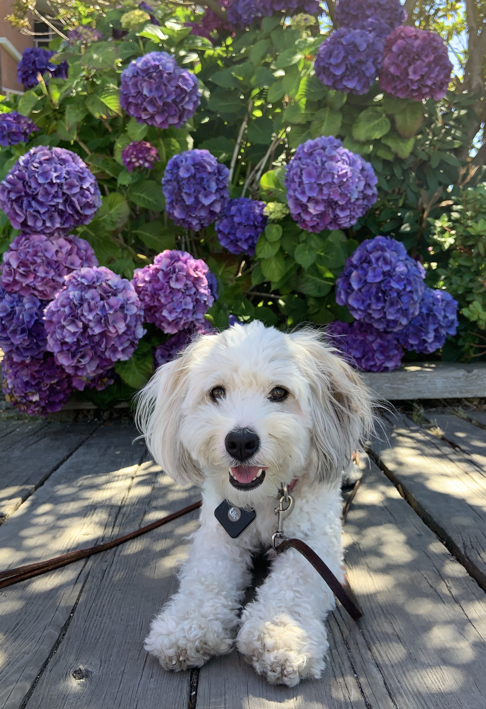

Who We Are
Nova

Hi there! My name is Nova and I'm a two-year-old Aussichon, which means that I'm half Australian Shepherd and half Bichon Frise. My favorite food is all the food. I love taking long walks with my mom and running after squirrels. I never catch them, but I shall never give up. I also love other cats and dogs and I get very excited when I see them. Fun fact: I only speak French so my mom translated this for me. Enjoy my website! :)
Catherine
Hi! I'm Catherine, I'm 20 years old and I'm Nova's mom. I love all animals (but don't tell Nova), and I love hiking and camping! My favorite food is sushi and chocolate. Fun fact: I lived on a sailboat with my family for 6 months while we sailed from Canada to the Bahamas and I had to homeschool my two little brothers during the trip. Hope you enjoy our website! :)